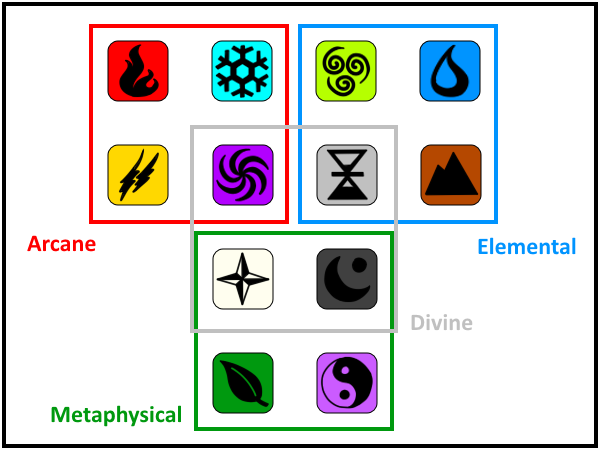

Magic in Casarok
Magic has been a driving force in Casarok throughout its long history. Since the first days of the intelligent life, mortals have been able to wield magic either through inherently being born with it or learning it through rigorous study. The gods and goddesses of Casarok, on the other hand, have always been able to use magic.
Magic is used by drawing from one's own mana, the life force that exists within all creatures and the very planet itself. By manipulating one's mana in various methods and quantities, a person can cast a plethora of spells. Mana is a limited resource, however, due to the fact that it draws from the very power that sustains life. One's mana is depleted when their life force is weakened to the point that drawing from it further would do damage to the user. Mana can be restored by resting, eating, drinking, or consuming special products like mana potions that boost one's life force.
Wielding magic can be dangerous to the user under certain circumstances. The most common magical affliction is known as mana sickness. If one continues to use magic beyond the zero-mana threshold previously stated, then they become susceptible to this disease the more they continue to cast spells. Symptoms include coughing, paleness of the skin or fur, and chills. Extreme cases can lead to permanent maximum mana reduction, muscular atrophy, coma, or even death. On the opposite end of the spectrum, one can have mana addiction. This affliction is noted by the physiological need to imbibe mana potions constantly. Mana addiction can be developed by fluctuations in life force such as consistently using and restoring mana. Symptoms are very similar to that of an alcohol or drug addiction. Despite the possible dangers, most magic users only experience slightly accelerated aging over their lifetime from tapping into their life force.
Magic is divided into four schools (arcane, elemental, metaphysical, divine) and 12 elements (fire, frost, lightning, earth, water, air, light, dark, nature, spirit, time, space). The diagram below shows how they are divided:
The School of the Arcane deals with the use of mana to manipulate various energies surrounding the user. Some elements, such as Frost and Space can utilize physical forces, but for the most part they are purely magical energies. Only those of great intellect are capable of mastering arcane magic. Masters of the four arcane arts are known as mages.
The School of the Elements works with the forces of the very planet itself. Most of its power is physical in nature, though some elements in this school draw from the deep geological span of Casarok. Earth and Time in particular can utilize these geological forces. It takes great force of will to control the powers of the elements. Masters of the four elemental arts are known as elementalists.
The School of the Metaphysical teaches the use of intangible forces. These forces can be observed and studied, but they cannot be fully grasped except by those who understand these particular elements. All these elements are capable of healing, each with its own method of doing so. In order to become a strong magic user in the realm of the metaphysical must be strong in spirit. Masters of the four elemental arts are known as wizards.
The School of the Divine encapsulates the strongest magic powers in the universe. These are powers that can only be understood or granted by the gods and goddesses of Casarok. As such, the only mortal that can use divine magic powers are their direct emissaries. These include champions and oracles though rarely they are wielded by their lesser counterparts, agents and priests or priestesses.